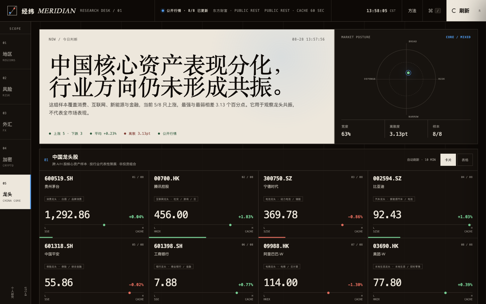

AI Agent 厂商，开始用免费额度争夺你的下一次任务
当功能趋同时，额度不只是促销工具，也在重新分配用户的下一次任务。
阅读原文 ↗ 正在写，暂未发布
按 Enter 也可以进入
XiaHua OS v1.0
XIAHUA OS · AI PRODUCT WORKSPACE · SHANGHAI / REMOTE
PRODUCT × EVALUATION × BUILD
专注 Agent 产品化与全链路评测，会把模糊意图写成可验证任务，把一次失败还原到第一处关键偏差，再把方法亲手做成能跑的原型、工具和内容。
HOW I WORK / 做事偏好
我不迷信“模型又变强了”，我更相信任务、证据和可回归的下一版。
当功能趋同时，额度不只是促销工具，也在重新分配用户的下一次任务。
阅读原文 ↗ 正在写，暂未发布
PROJECT SCREENSHOTMARKET INTELLIGENCE · JAVASCRIPT
以数据完整性为先的全球市场雷达，把实时行情、市场广度、分化证据与 40 日曲线组织成可执行的研究视图。
打开仓库 ↗PLAYGROUND / BUILT TO RUN
正在载入……
横屏体验更完整，可在游戏内横向滑动查看手牌。
LET'S CONNECT
VERSION HISTORY